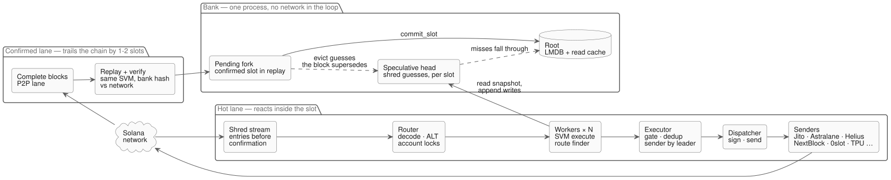
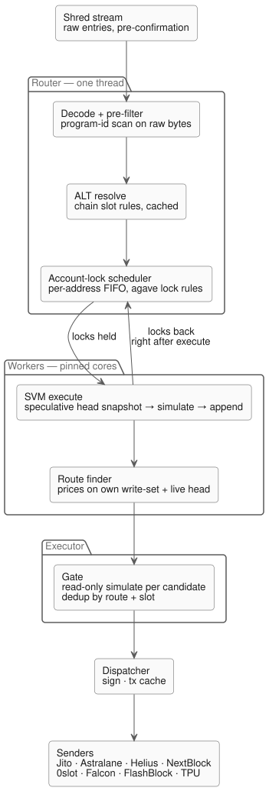
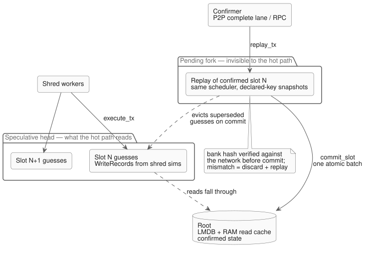
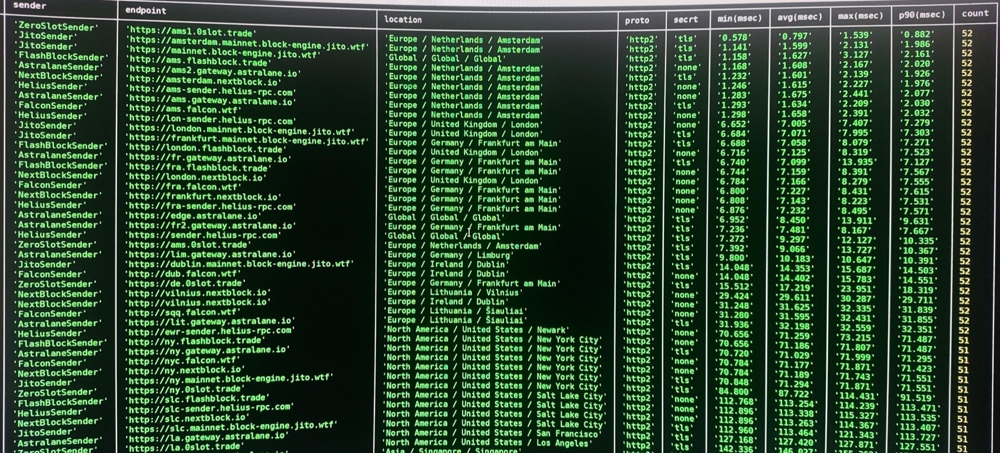

Reacting to Solana transactions before the chain has confirmed them — a private SVM bank fed straight from the shred stream
Lumen is a Solana state machine that does not wait for the chain. It consumes the raw shred stream — the pre-confirmation transaction data validators gossip to each other — decodes every transaction, simulates it in an embedded SVM against a speculative copy of chain state, and reacts to the result. By the time a swap is confirmed on chain, Lumen has already priced what it did to the pool and, if that opened an opportunity, sent its own transaction.
The first two versions of this system read prices from an indexer and simulated through an API. Lumen replaces all of that with a bank: an LMDB-backed accounts database with a real solana-svm execution engine on top, so the whole loop — ingest, simulate, price, gate, sign, send — happens in one process with nothing in the hot path that talks to a network.
Three feeds in, one bank in the middle, eight senders out. Boot runs once: an agave snapshot is ingested straight into LMDB and indexed in place, every DEX pool is discovered into a registry, and the router graph of token pairs is built. From then on the shred stream drives the hot path and the complete lane drives the confirmer, both through the same bank and the same SVM engines.

The hot path is hand-built threads and channels, not an async runtime: a router thread, a set of workers pinned to their own cores, an executor and a dispatcher. Every stage is measured; every stage has a histogram.

Router. Scans raw bytes for tracked program IDs before deserialising anything, resolves address-lookup tables with the chain's own slot rules (a table extended in this slot is not visible yet; a deactivated one is gone after its cooldown), and classifies each transaction's writable and readonly accounts.
Account-lock scheduler. The piece I am most careful about. Two workers simulating two swaps on the same pool from the same snapshot would silently corrupt the state everything downstream prices against. So transactions are dispatched only once their account locks are free, with per-address FIFO queues in the shape of agave's own unified-scheduler: conflicting transactions run strictly in arrival order and each sees its predecessor's writes; independent ones run in parallel; every scheduling event costs O(accounts of one transaction), not O(queue depth).
Workers. Snapshot the speculative head, run the transaction through the SVM, append its writes, and hand the locks back immediately — route finding happens after release, priced on the transaction's own write-set so a conflicting successor cannot tear the view.
Executor and dispatcher. Every candidate route is re-simulated read-only before it is trusted, duplicates of a route already sent this slot are dropped, the transaction is signed with a blockhash taken from the slot's last tick (the only hash the chain actually accepts), and it goes out through whichever sender is closest to the current leader.
This is the part that took the longest to get right. The bank keeps confirmed state in LMDB and two layers on top of it, in the same shape as agave's bank forks:

The speculative head is what the hot path reads and writes: the guesses produced by simulating shreds, per slot, last writer wins.
The pending fork is a confirmed block being replayed by the confirmer, through the same scheduler and the same SVM. The hot path cannot see it. When the block's bank hash matches what the network attested, commit_slot promotes it to LMDB in one atomic batch and evicts the guesses it supersedes; if it does not match, the fork is discarded and replayed. A wrong guess therefore lives at most one confirmation lag, and disk is only ever written from deterministic replay of confirmed transactions.
Replay is verified against the chain the way a validator verifies itself: an accounts lt-hash folded per block, sealed into the agave bank hash, compared with the quorum-attested hash for that slot. Same-block program upgrades and lookup-table extensions stay invisible for one slot because the chain delays them — that came out of reading agave's loader rather than guessing.
On the production Xeon with the x86-64 JIT a real Raydium V4 swap simulates in about 0.2 ms p50. The rest of the table is the same benchmark, cargo bench --bench svm_sim, on the real mainnet SOL/USDC pool and program bytes captured as fixtures, run on a 10-core Apple M-series laptop — which means the sBPF interpreter (the JIT only exists for x86-64), so those rows are roughly a 5× pessimistic floor, not the real-world cost.
| Path | What runs | p50 | p90 | p99 |
|---|---|---|---|---|
| Raydium V4 swap — production | Xeon, x86-64 JIT, same swap, measured on the live box | 0.2 ms | — | — |
| Raydium V4 swap — laptop | sanitize → load → execute, 16 384 CU, sBPF interpreter | 1.01 ms | 1.11 ms | 1.22 ms |
| Hot path, 200 tx / slot | speculative execute: snapshot head, simulate, append, then confirm | 0.98 ms | 1.06 ms | 1.14 ms |
| System transfer | the floor: SVM overhead with almost no BPF | 59 µs | 62 µs | 110 µs |
| Scheduler | admit + dispatch + release, 30 accounts, 8 in flight | 3.5 µs per transaction | ||
The hot-path row is the one that matters: a full speculative execute with the bookkeeping around it costs no more than the bare simulation, so the scheduler and the bank add nothing measurable on top of the SVM. Throughput on the laptop scales from 960 to 2 770 swaps/s across eight threads — sub-linear, which points at a shared program-cache lock inside the SVM as the next thing to profile.
Simulation is only half of it; the transaction still has to reach the leader first. Lumen keeps a router over every landing service I could get access to and measures each endpoint continuously, so a transaction goes to whichever path is closest to the current leader's region. This is the live probe table from the sender router — same transaction, every provider, every region.

Rust's ownership rules stop data races, not logic races. Two threads can take perfectly safe snapshots and still compute the wrong answer; the order has to be imposed explicitly, and agave's lock table is the right model for that.
When in doubt, read the validator. Blockhash validity, lookup-table slot rules, program delay visibility — each of those was a bug in my mental model until I opened agave's source and matched it line by line.
Measure every stage separately. The first version of the scheduler hid its cost inside "queue wait"; splitting the histogram made the real number visible in a day.
The repository is private. The on-chain program that recomputes every arbitrage before it settles is open: Solscan.